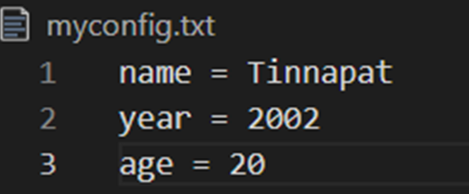
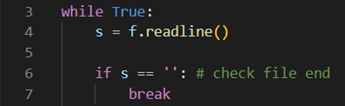
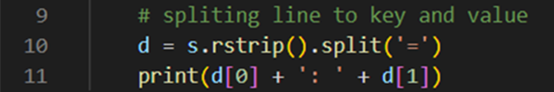
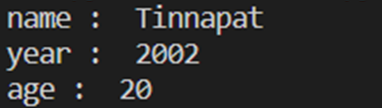
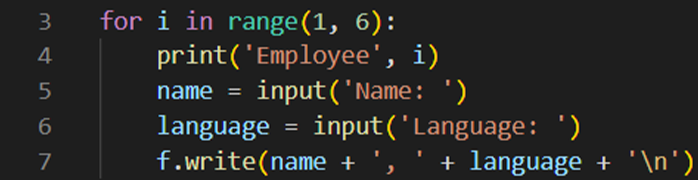
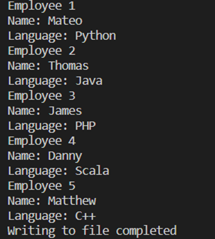
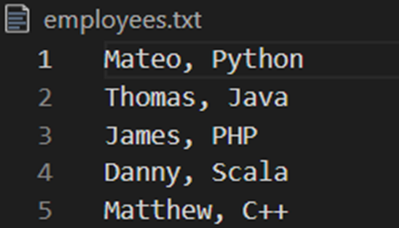
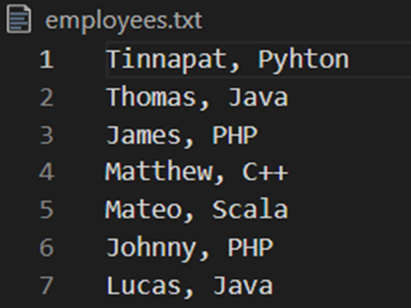
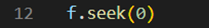
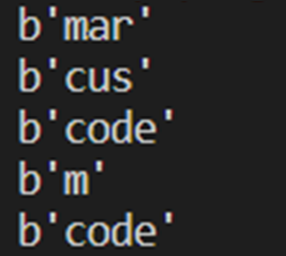

Input/output with files

ในการเขียนโปรแกรม ไฟล์ (File) คือสิ่งที่ใช้สำหรับเก็บข้อมูลบนคอมพิวเตอร์ในหน่วยเก็บข้อมูล คอมพิวเตอร์มีไฟล์หลากหลายประเภทขึ้นอยู่กับวัตถุประสงค์การใช้งานของมัน โดยทั่วไปแล้วไฟล์จะแบ่งออกเป็น 2 รูปแบบคือ Text file และ Binary file โดย Text file จะเก็บไฟล์ในรูปแบบของชุดตัวอักษรหรือข้อความที่มนุษย์สามารถอ่านเข้าใจได้ ในขณะที่ Binary file เก็บข้อมูลในรูปแบบ Binary form สำหรับคอมพิวเตอร์เพื่อทำงาน ในบทนี้ เราจะพูดถึงการทำงานกับไฟล์เบื้องต้นในภาษา Python
การเปิดไฟล์ ในภาษา Python
ก่อนที่จะเริ่มทำงานกับไฟล์ สิ่งแรกที่คุณต้องทำก็คือต้องเปิดไฟล์ขึ้นมาก่อน ในภาษา Python ใช้ฟังก์ชัน open() สำหรับเปิดไฟล์เพื่อวัตถุประสงค์ที่ต้องการ
โดยฟังก์ชันสามารถเปิดเพื่อทำงานได้กับทั้ง Text file และ Binary file นี่เป็นรูปแบบของการใช้งานฟังก์ชันเพื่อเปิดไฟล์

โดยที่ filename เป็นชื่อหรือ Path ของไฟล์ที่ต้องการเปิด และ mode เป็นโหมดสำหรับเปิดไฟล์ เช่น เปิดไฟล์เพื่อการอ่านหรือการเขียน เป็นต้น เมื่อการเปิดไฟล์สำเร็จ ฟังก์ชันจะส่งไฟล์ออบเจ็คกลับมาเพื่อนำไปใช้ในการอ่านและเขียนไฟล์ต่อไป สำหรับโหมดในการเปิดไฟล์นั้นมีหลายแบบที่คุณสามารถใช้ได้ นี่เป็นโหมดการเปิดไฟล์ที่ใช้กับฟังก์ชัน open() ในภาษา Python

โดยปกติแล้วในการทำงานกับไฟล์สามารถมีข้อผิดพลาดเกิดขึ้นได้ และนั่นจะทำให้โปรแกรมหยุดการทำงานในทันที ส่งผลให้ File object ไม่ถูกปิดอย่างถูกต้อง ในภาษา Python เราสามารถใช้งานไฟล์กับคำสั่ง with เพื่อยืนยันว่า File object จะถูกปิดการใช้งานเสมอไม่ว่าจะเกิดข้อผิดพลาดหรือไม่ก็ตาม

การอ่านข้อมูลจาก Text file
หลังจากที่คุณได้เรียนรู้เกี่ยวกับฟังก์ชันที่ใช้ในการเปิดไฟล์แล้ว ต่อไปจะเป็นตัวอย่างของการอ่านข้อมูลจากไฟล์ในภาษา Python เราจะเขียนโปรแกรมในการอ่านข้อมูลจาก Text file
และนำข้อมูลที่อ่านได้มาแสดงผลทางหน้าจอ นี่เป็นโค้ดของโปรแกรมในการอ่านข้อมูลจาก Text file


ในตัวอย่าง เป็นโปรแกรมในการอ่านข้อมูลจาก Text file ในตอนแรกของโปรแกรม เราได้เปิดไฟล์ด้วยฟังก์ชัน open() โดยอาร์กิวเมนต์แรกเป็นชื่อของไฟล์คือ myfile.txt และเราต้องการเปิดไฟล์เพื่ออ่านจึงใส่โหมดของการเปิดเป็น r หลังจากการเปิดสำเร็จฟังก์ชันส่ง File object กลับในตัวแปร f อย่างไรก็ตาม ถ้าหากการเปิดไฟล์ล้มเหลวจะทำให้เกิดข้อผิดพลาด OSError ขึ้น

คำสั่งต่อมา เป็นการอ่านข้อมูลจากไฟล์ด้วยเมธอด read() โดยเมธอดนี้จะทำการอ่านข้อมูลทั้งหมดในไฟล์เพียงครั้งเดียว และข้อมูลที่อ่านได้จะเป็น String และเรานำใส่ในตัวแปร s เพื่อนำไปใช้งานต่อไป

ในคำสั่งต่อมา เป็นการปิดการทำงานของไฟล์ด้วยเมธอด close() นี่เป็นสิ่งที่สำคัญและคุณควรจะจำไว้เสมอว่า ในการทำงานกับไฟล์ทุกครั้งนั้นจะต้องทำการปิดการทำงานของ File object เสมอ เพื่อให้ไฟล์สามารถใช้ได้กับโปรแกรมอื่นๆ ต่อไป หลังจากนั้นเราแสดงข้อมูลที่อ่านมาได้จากไฟล์

นี่เป็นผลลัพธ์การทำงานของโปรแกรมที่บ่งบอกว่าในไฟล์ myfile.txt ของเรามีข้อมูลดังกล่าวอยู่

และนี่เป็นรูปแบบของโปรแกรมในการใช้งานคำสั่ง with เพื่อเปิดไฟล์ และเราไม่ต้องปิดไฟล์ด้วยเมธอด close() และนี่จะยืนยันว่าไฟล์จะถูกปิดการทำงานเสมอแม้จะเกิดข้อผิดพลาดขึ้นก็ตาม
การอ่านข้อมูลทีละบรรทัดด้วยเมธอด readline()
ในตัวอย่างก่อนหน้า เมธอด read() จะทำการอ่านข้อมูลทั้งหมดมาในครั้งเดียว ในภาษา Python นั้นคุณสามารถอ่านข้อมูลจากไฟล์ทีละบรรทัดได้โดยการใช้เมธอด readline() ต่อไปเป็นตัวอย่างของโปรแกรมในการอ่านข้อมูลจาก Text file
ทีละบรรทัด โดยการใช้คำสั่ง While loop เพื่อวนอ่านข้อมูลจากไฟล์ นี่เป็นโค้ดการทำงานของโปรแกรม
ในตัวอย่าง เป็นโปรแกรมในการอ่านข้อมูลจากไฟล์ทีละบรรทัดด้วยเมธอด readline() ในตอนแรกเราทำการเปิดไฟล์ myconfig.txt ด้วยโหมดสำหรับการอ่านข้อมูลเช่นเดิม
นี่เป็นรูปของข้อมูลที่แสดงในไฟล์ myconfig.txt ที่เราจะอ่านโดยโปรแกรมของเรา โดยไฟล์ดังกล่าวเก็บค่าของการตั้งค่าโดยมี Key และ Value และแต่ละค่าจะแบ่งแยกโดยการขึ้นบรรทัดใหม่
หลังจากนั้นโปรแกรมจะทำการวนอ่านไฟล์ด้วยคำสั่ง While loop แต่ละรอบของการทำงานเมธอด readline() จะอ่านข้อมูลจากไฟล์มาทีละบรรทัดโดยรวม \n ด้วย เราได้ใช้คำสั่ง If เพื่อตรวจสอบหากข้อมูลที่อ่านได้เป็นค่า String ว่าง ' ' หมายถึงโปรแกรมได้อ่านไฟล์หมดแล้วและสั่งให้โปรแกรมออกจาก Loop ไป
การอ่านข้อมูลในแต่ละรอบนั้นจะอยู่ในตัวแปร s เราได้ทำการตัด New line ออกไปด้วยเมธอด rstrip() และใช้เมธอด split() เพื่อแบ่งเอาค่าของ Key และ Value ของการตั้งค่าที่แบ่งแยกโดยเครื่องหมายเท่ากับ (=) และนำมาแสดงผลโดยจัดรูปแบบการแสดงผลใหม่
นี่เป็นผลลัพธ์การทำงานของโปรแกรม ในการอ่านข้อมูลจากไฟล์ทีละบรรทัดด้วยเมธอด readline()
การเขียนข้อมูลลงบน Text file
ในการทำงานกับไฟล์ นอกจากการอ่านข้อมูลแล้วยังมีการเขียนข้อมูลลงไปในไฟล์ ในการเขียนโปรแกรมนั้นอาจจะมีข้อมูลบางอย่างที่เราจะต้องเก็บไว้ในรูปแบบของไฟล์ เพื่อนำไปใช้งานในอนาคตหรือใช้กับโปรแกรมอื่นๆ ต่อไปเป็นตัวอย่างของการเขียนข้อมูลลงใน Text file ในภาษา Python
โดยโปรแกรมของเราจะทำการบันทึกข้อมูลของพนักงานโดยมีชื่อและภาษาโปรแกรมที่เขียนโดยรับค่าเหล่านี้มาจากคีย์บอร์ด และบันทึกข้อมูลเหล่านั้นไว้ในไฟล์ นี่เป็นโค้ดการทำงานของโปรแกรม
ในตัวอย่าง เป็นโปรแกรมเขียนข้อมูลลงบนไฟล์โดยโปรแกรมจะรับข้อมูลจากคีย์บอร์ด ในตอนแรกเราได้ทำการเปิดไฟล์ employees.txt เพื่อเขียนข้อมูลใหม่โดยการใช้โหมด w ในโหมดนี้ถ้าหากไม่มีไฟล์ดังกล่าวอยู่โปรแกรมจะสร้างไฟล์ขึ้นมาใหม่ หรือหากมีอยู่จะทำการลบไฟล์เดิมและสร้างใหม่
หลังจากการเปิดไฟล์เสร็จเรียบร้อยแล้ว เราใช้คำสั่ง For loop ในการวนอ่านข้อมูลของพนักงานจำนวน 5 คน โดยมีชื่อและภาษาโปรแกรมที่เขียนจากทางคีย์บอร์ด หลังจากได้ข้อมูลแล้วเราใช้เมธอด write() เพื่อเขียน String ลงไปบนไฟล์และจัดรูปแบบของ String โดยคั่นข้อมูลแต่ละแบบด้วยเครื่องหมายคอมมา (,) โปรแกรมวนอ่านค่าและบันทึกข้อมูลจนครบ 5 รอบและออกจาก Loop และเราปิดไฟล์หลังจากที่เขียนเสร็จด้วยเมธอด close()
นี่เป็นผลลัพธ์การทำงานของโปรแกรม โดยโปรแกรมถามให้เรากรอกข้อมูลของพนักงานจำนวน 5 คนและบันทึกข้อมูลเหล่านั้นลงไปบนไฟล์ employees.txt และนี่เป็นข้อมูลในไฟล์หลังจากที่การเขียนข้อมูลเสร็จสิ้น
การเขียนข้อมูลลงต่อท้ายไฟล์เดิม (File appending)
ในการเขียนข้อมูลลงบนไฟล์ในภาษา Python นั้นมีหลายโหมดด้วยกัน โดยปกติแล้วในโหมด w โปรแกรมจะสร้างไฟล์ขึ้นมาใหม่สำหรับการเขียนเสมอ สำหรับการเขียนข้อมูลแบบต่อท้ายไฟล์เดิมนั้น คุณสามารถทำได้โดยการเปิดไฟล์ในโหมด a มาดูตัวอย่าง
ในตัวอย่าง เป็นโปรแกรมในการเขียนข้อมูลต่อท้ายไฟล์เดิม จากในไฟล์ก่อนหน้า employees.txt เราได้เขียนข้อมูลของพนักงานลงไปในไฟล์แล้ว 5 คน (หรือ 5 บรรทัด) ในโปรแกรมนี้เป็นการเขียนข้อมูลเพิ่มลงไปอีก 2 บรรทัด
นี่เป็นข้อมูลในไฟล์ employees.txt หลังจากการรันโปรแกรมเพื่อเขียนข้อมูลต่อท้ายไฟล์ สังเกตว่าสองบรรทัดสุดท้ายเป็นข้อมูลที่เพิ่มเข้ามาใหม่ โดยที่ข้อมูลที่เขียนไปก่อนหน้ายังมีอยู่
การอ่านและเขียนข้อมูลกับ Binary file
Binary file เป็นรูปแบบหนึ่งของไฟล์ในคอมพิวเตอร์ที่ไม่ได้เก็บข้อมูลในรูปแบบของ Text file แต่ข้อมูลของ Binary file จะเก็บข้อมูลในรูปแบบของตัวเลขฐานสอง ในภาษา Python เราสามารถทำงานกับ Binary file
ด้วยการเปิดไฟล์ในโหมด b ต่อมาดูตัวอย่างในการอ่านและเขียนข้อมูลกับ Binary file ในภาษา Python
ในตัวอย่าง เป็นโปรแกรมในการเขียนข้อมูลลงไปใน Binary file โปรแกรมได้แบ่งออกเป็นสองส่วน ในส่วนแรกเป็นการเขียนข้อมูลลงไปในไฟล์ เราได้เปิดไฟล์ที่มีชื่อว่า data ในโหมด wb เป็นโหมดสำหรับเขียนข้อมูลลงใน Binary file เราได้ทำการเขียนข้อมูลในรูปแบบของ byte-array ลงไปบนไฟล์โดยมีเนื้อหาว่า b'marcuscode' โดยข้อมูลแต่ละตัวใน byte-array เรียกว่า byte object
หลังจากการเขียนข้อมูลลงใน Binary file เสร็จสิ้นแล้ว ในส่วนต่อมาเป็นการอ่านข้อมูลจากไฟล์ที่เราพึ่งได้เขียนไป เราได้เปิดไฟล์เดิมในโหมด rb เป็นโหมดสำหรับอ่านข้อมูลใน Binary file หลังจากเปิดเสร็จสิ้น เราได้ใช้เมธอด read() เพื่ออ่านข้อมูลโดยมีอาร์กิวเมนต์เป็นจำนวน byte ที่ต้องการอ่าน หลังจากอ่านข้อมูลเสร็จ File pointer จะชี้ไปยังตำแหน่งต่อไปเพื่อที่จะอ่าน
หลังจากที่เราได้อ่านข้อมูลไป 3 ครั้งด้วยขนาด 3 3 และ 4 bytes ตามลำดับ ทำให้ File pointer ในตอนนี้ชี้อยู่ที่จำแหน่งที่ 11 เมธอด seek() ใช้สำหรับเลื่อนตำแหน่งของ File pointer ไปยังตำแหน่งที่ต้องการ เราได้เลื่อนไปยังตำแหน่ง 0 ซึ่งเป็นตำแหน่งเริ่มต้นของไฟล์ และการใส่ค่าตำแหน่งเป็นลบ เป็นการอ้างอิงจากจุดสุดท้ายของไฟล์
นี่เป็นผลลัพธ์การทำงานของโปรแกรมในการทำงานกับ Binary file ทั้งการอ่านและเขียนข้อมูล
ในบทนี้ คุณได้เรียนรู้เกี่ยวกับการทำงานพื้นฐานกับไฟล์ในภาษา Python ทั้งการอ่านและเขียนข้อมูลกับ Text file โดยการใช้โหมดต่างๆ นอกจากนี้ เรายังได้ให้ตัวอย่างของการทำงานกับ Binary file เพื่อเก็บข้อมูลในรูปแบบของ ฺbyte object ลงไปบนไฟล์ และคุณได้ทราบถึงประโยชน์ของการใช้งานไฟล์บนคอมพิวเตอร์กับการเขียนโปรแกรม